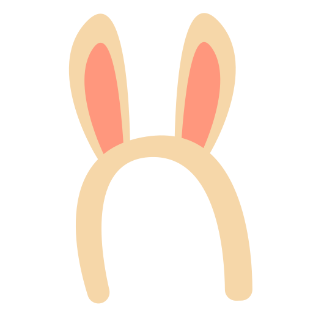

<!-- 네비게이션바 -->
<nav class="navbar navbar-expand-lg bg-gradient">
    <div class="container-fluid">
        <a class="navbar-brand text-light" href="/">
            
                Banimo Diary
        </a>
        <button class="navbar-toggler" type="button"
                data-bs-toggle="collapse"
                data-bs-target="#navbarSupportedContent"
                aria-controls="navbarSupportedContent"
                aria-expanded="false"
                aria-label="Toggle navigation">
            <span class="navbar-toggler-icon"></span>
        </button>
        <div class="collapse navbar-collapse" id="navbarSupportedContent">
            <ul class="navbar-nav me-auto mb-2 mb-lg-0" >
                {% if request.session.id %}
                <li class="nav-item">
                    <a class="nav-link" href="../diary/write">일기쓰기</a>
                    <a class="nav-link" href="../users/logout">로그아웃</a>
                </li>
                {% else %}
                <li>
                  <a class="nav-link" href="../diary/write">일기쓰기</a>
                </li>
                {% endif %}
            </ul>
        </div>
    </div>
</nav>